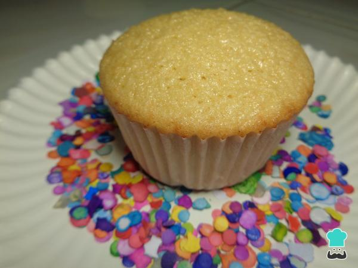

Cupcakes de vainilla para celíacos

| Ingredientes |
Cantidades |
| Mantequilla |
60 gr. |
| Azucar |
100 gr. |
| Huevos |
2 |
| Extracto de vainilla |
1 cuchara sopera |
| Harina sin gluten |
50 gr. |
| Levadura sin gluten |
1 cuchara sopera |
| Leche |
60 ml. |
| Harina de arroz |
1/2 taza |
- Para comenzar tomamos la mantequilla y el azúcar en un tazón y con ayuda de una batidora los mezclamos.
- Una vez listos añadimos los huevos y nuevamente batimos hasta integrar todo muy bien.
- Enseguida añadimos a la masa de los cupcakes de vainilla caseros las harinas y la levadura tamizadas, y seguimos mezclando hasta que todo sea uniforme.
- Por otro lado, mezclamos la leche junto con la vainilla, tomamos esta mezcla y la añadimos a la de harinas, huevo, azúcar; y seguimos mezclando hasta que todo esté perfectamente integrado.
- Una vez lista nuestra masa de cupcakes sin gluten con ella rellenamos los capacillos de nuestro molde para magdalenas solo hasta la mitad y los llevamos a hornear por 25 minutos a 180° C.
- Una vez pasado este tiempo, retiramos los cupcakes de vainilla sin gluten del horno, los dejamos enfriar, y ya podemos disfrutar de este increíble postre casero.
Receta de: Miriam Hernandez Medina